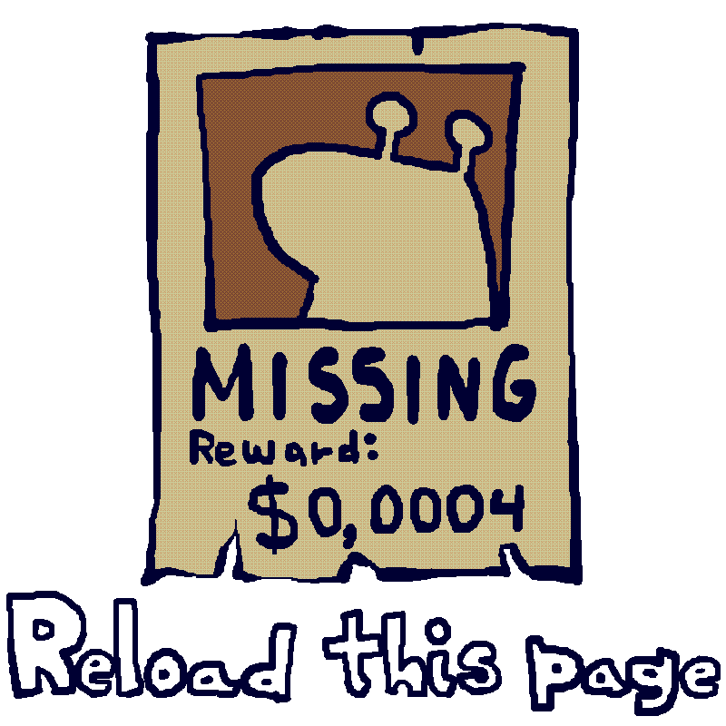

Contact E-mail: killin'myself@org
07/02/2026
The site is out! Yaaayy!!
I've been studying and learning about webdevelopment for almost an year for this little project. For now it's only this small social media hub thing, but I plan on expanding on this further whenever I have the time. I am a begginer at this programming thing, so if you have any issues with this site, please contact me telling your problems. I want to make this a nice experience for you after all. Take care!!
Soon to be added:
- Portuguese language toggle;
- Main landing page;
- More snail animations :]